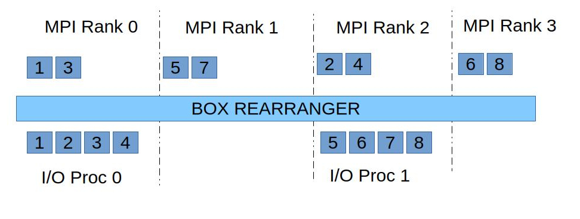
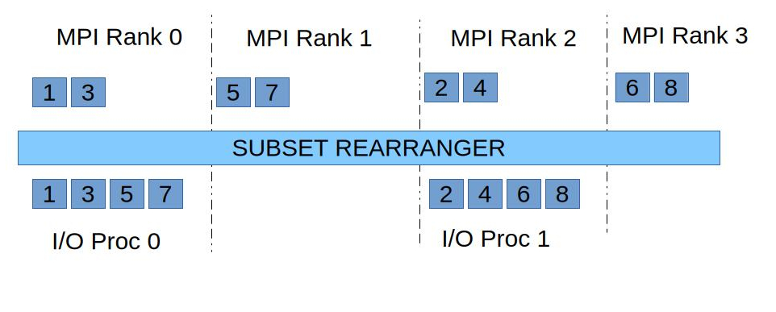
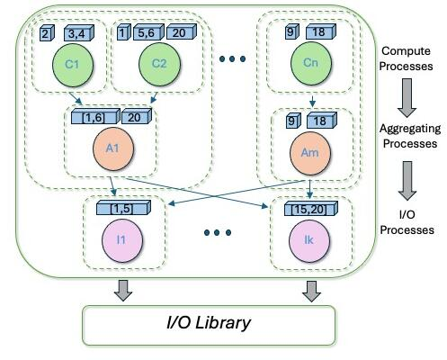
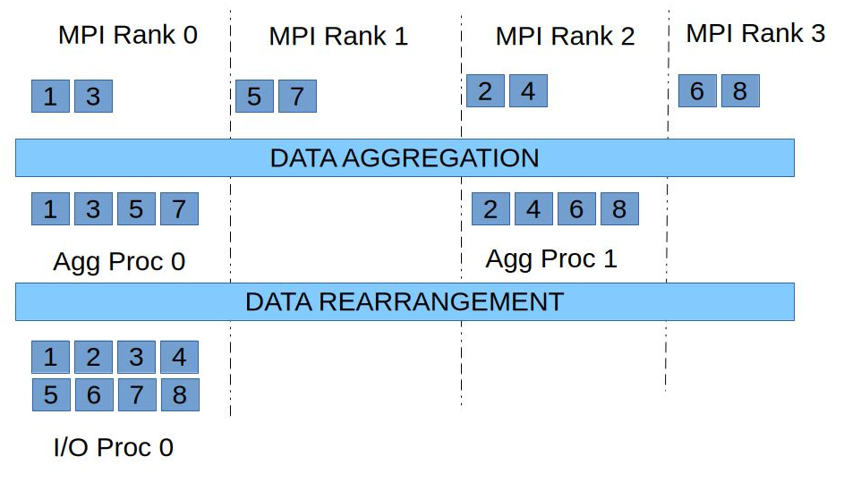

|
SCORPIO 2.0.0
|
The SCORPIO library supports APIs (see PIO_initdecomp) that allows users to specify how the user data is distributed/decomposed across the application compute processes. The application can create many such I/O decompositions, and use it to read/write data from input/output files. The library also provides a set of data rearrangers that automatically rearranges data in the compute processes for optimizing I/O performance. The data in the compute processes is rearranged to a subset of the compute processes, the I/O processes, that eventually call the low-level I/O libraries (NetCDF, PnetCDF, HDF5, ADIOS2) to read from and write data to the file system. See the PIO_init API documentation on how to specify the I/O processes for an I/O system.
The library provides the following I/O data rearrangers,
To disable data rearrangement use the subset rearranger (PIO_REARR_SUBSET) and set every compute process to an I/O process (see PIO_init for information on how to set the I/O process rank/stride)
The box rearranger rearranges data, for a model/file variable (see PIO_def_var), across the compute processes to the I/O processes such that each I/O process has a contiguous chunk/block/box of the variable data. The data rearrangement essentially involves an alltoall communication between the compute and I/O processes. Most low-level I/O libraries expect a contiguous chunk of the variable in the read/write APIs.

Consider a simple I/O decomposition with 8 data elements distributed across 4 MPI processes as shown in figure (box_rearranger_fig) above. The MPI/compute processes 0 & 2 are the I/O processes. When using this I/O decomposition to write a 1D array/variable with 8 elements, the box rearranger rearranges data in the 4 compute/MPI processes to the 2 I/O processes. As shown in the figure all the rearranged data elements in an I/O process are contiguous. You can see that I/O process 0 receives data from MPI processes 0 & 2 (and depending on the I/O decomposition might end up received data from any MPI process).
The subset rearranger partitions the compute processes such that each I/O process gathers data from a contiguous subset of compute processes. Since the data rearrangement occurs among subsets of the compute processes and I/O processes it avoids an alltoall communication among all the processes. However, unlike the box rearranger, the data in the I/O processes may not be contiguous chunks of the variable.

Using the same I/O decomposition discussed above (Box rearranger), in the case of the subset rearranger the rearrangement only happens among compute processes within a subset of processes. In the figure above the MPI processes 0 & 1 belong to the first subset and data from these processes are gathered into the 1st I/O process (MPI process with rank 0). The I/O process 0 does not communicate with any compute process from other subsets of processes (e.g. In the case above, I/O process 0 never receives data from MPI process 2 & 3). Also, note that the data in each I/O process in not contiguous. I/O process 0 has four contiguous regions of data (each region of size=1 in this case).

The contig rearranger aggregates data from compute processes to a set (subset of the compute processes) of aggregating processes. The data in the aggregating processes is rearranged to the I/O processes such that each I/O process has a single contiguous chunk (in the linear layout of the data in the file system) of data. The figure above shows a simple I/O decomposition with 20 data elements. The aggregating process A1 aggregates data from compute processes C1 and C2, and contains two contiguous chunks of data (chunk1 = [1, 6], chunk2 = [20]). Once the data is rearranged from aggregating processes to the I/O processes, the I/O process 0 contains a single contiguous chunk of data (chunk 1 = [1, 5]) that is written out using the low-level I/O libraries. However, note that depending on the I/O decomposition, the data chunk in an I/O process may still not be a contiguous chunk of the variable.

Again, using the toy I/O decomposition discussed above (Box rearranger), in the case of the contig rearranger the data in the compute processes are first aggregated into a set of aggregator processes. In the figure above data from MPI process 0 & 1 are aggregated to aggregating process 0 (also MPI rank 0, compute process 0). The aggregated data is rearranged from the aggregating processes to the I/O processes. Each I/O process, depending on the I/O decomposition, can potentially receive data from any aggregating process.